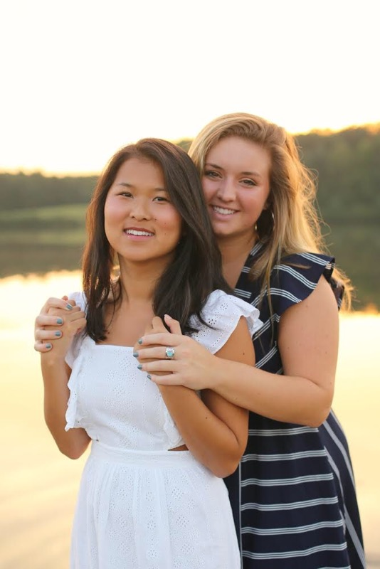
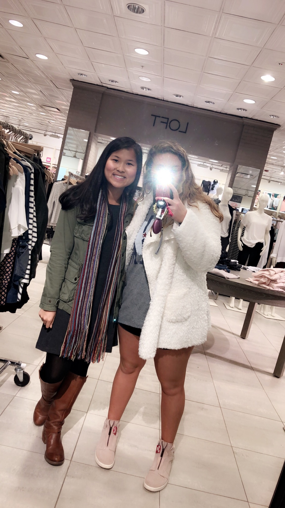
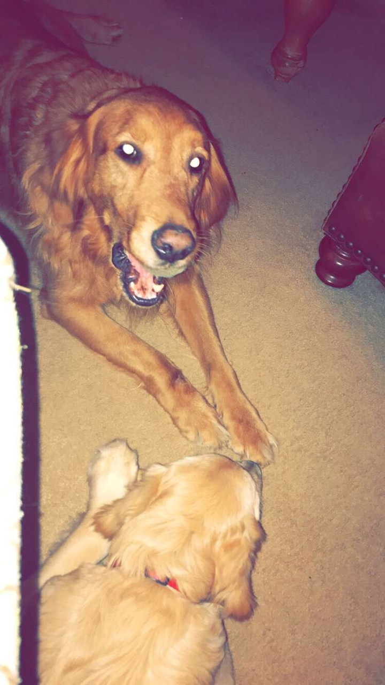
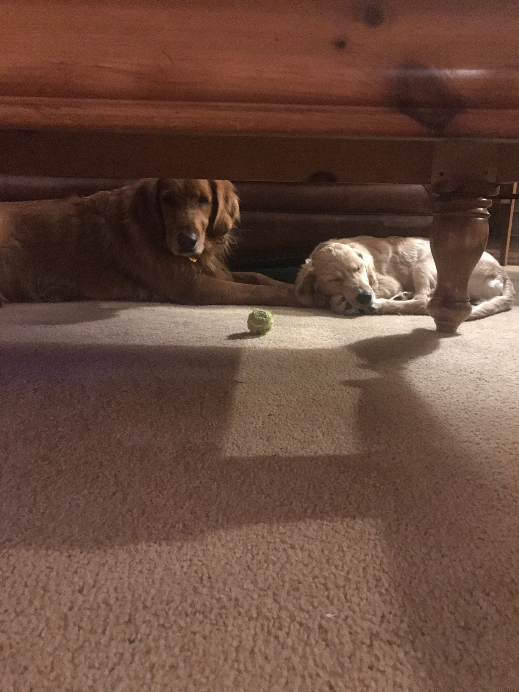
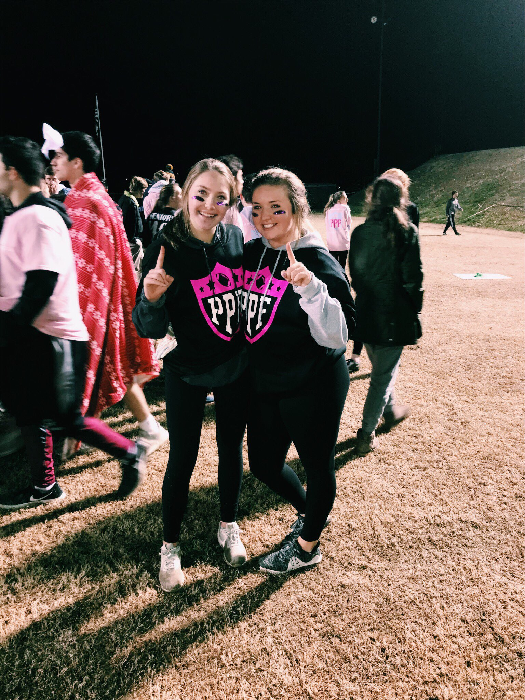
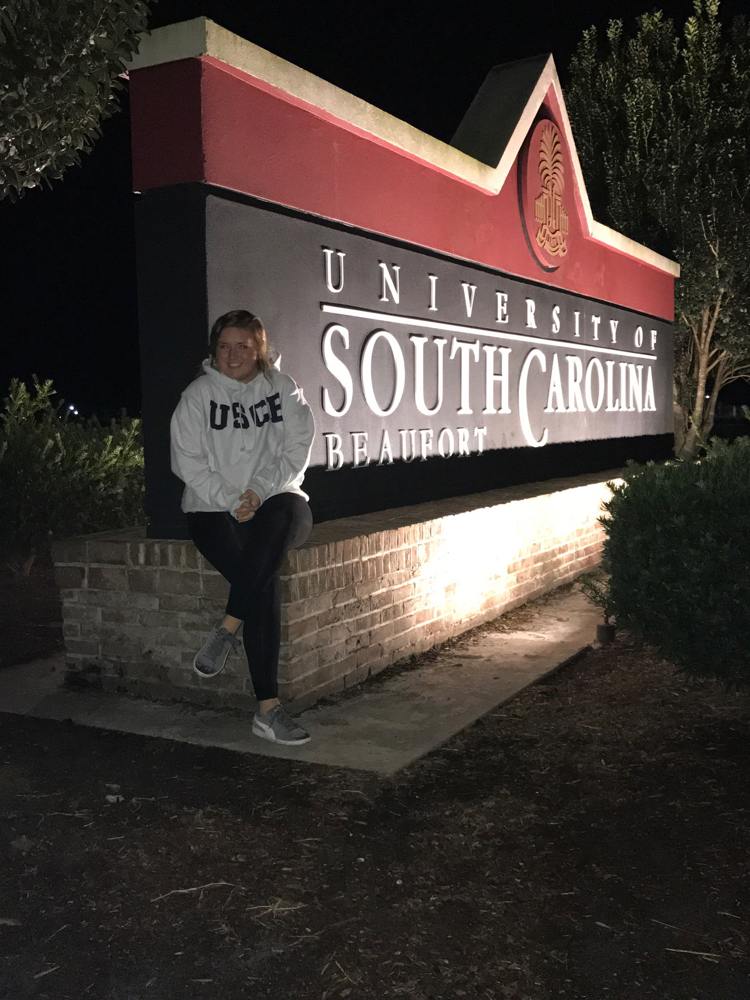
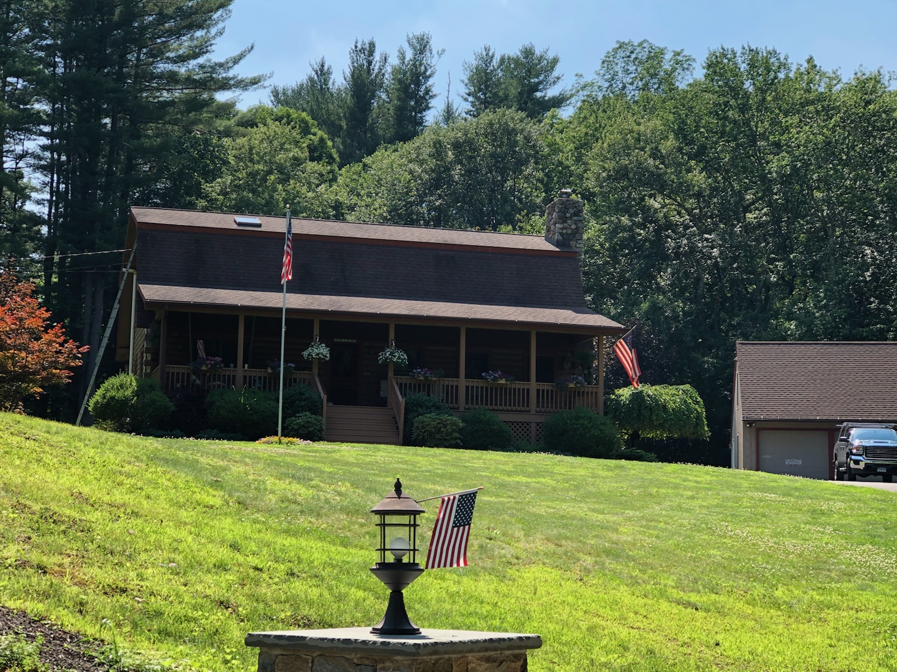
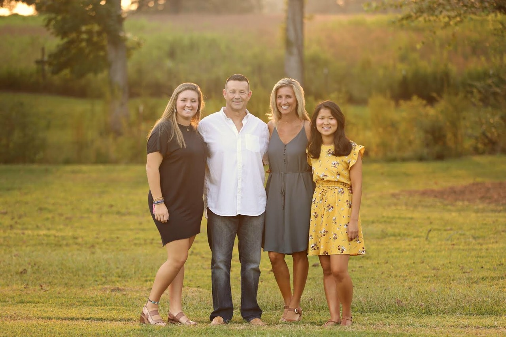

My sister Mya is 20, about to turn 21 in April. Something cool in my life is that she is adopted. If my parents did not adopt her I would have a differet sister which makes me feel special we were meant to be siblings. She was adopted when she was 6 months we lived in CT. She came before me I was born almost 3 years later. To be exact we are 2 years and 8 months apart. She is now one of my best friends, and I am glad she is my sister.


My two dogs are so cute. They are both golden retreivers, but so different. The oldest is Sam he is six, he is also a boy with a golden brown coat. The other is Macy she is six months old, she is also a girl with a very light brown coat. We got Macy in early October, my other dog Sam was not to thrilled about it. He would always growl at her, and not want to be around her. Thos only lasted a couple weeks for him to find out she is not that bad. Now they are the bestest of friends.


I am now a senior. I used to think I would never make it here. When you are in middle school, or even freshman year you look at the seniors at your school and cannot imagine being in that position. Going from middle school all the way to now you kind of feel ready, ready to go explore something new which brings you to college. Something I also thought would never come true I have been accepted to college, and will be atttending University of South Carolina Beaufort next year.


I was born and half raised in Conneticut. My parents have lived there their whole lives and all of our family lived there as well. I was born in 2001 in Bridgeport, CT on a freezing afternoon or you could call a blizard. My mom said it was misserable, but I was a blizard baby. We then as my sister and I were getting older spent alot of time with our grandparents and cousins for just so long. My parents were done with CT and wanted to go to the warmer weather, and we packed up and sadly left all our family. Then we moved in 2005 to Charleston, SC, then in 2006 we moved here to Greenville, SC. that is how we made it here.

